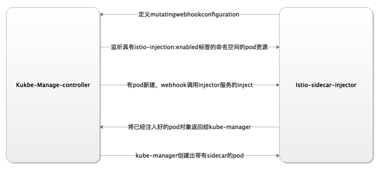

Istio注入
手动注入
手动注入使用istioctl工具
$ istioctl kube-inject -f samples/sleep/sleep.yaml | kubectl apply -f -
自动注入
原理： kubernetes的webhook能力
自动注入所需条件：
- 开启了sidecarInjectorWebhook
- 自动注入功能需要kubernetes 1.9或更高版本
- kubernetes环境需支持MutatingAdmissionWebhook
查看istio的mutatingwebhookconfiguration，通过修改配置我们可以变更自动注入匹配的label等
$ kubectl get mutatingwebhookconfiguration istio-sidecar-injector -oyaml查看istio注入全局配置
$ kubectl get cm sidecar-injector -n istio-system
系统全局控制
Istio-system的命名空间下有个sidecar-injector的configmap中设置policy=disabled字段来设置是否启用自动注入
apiVersion: v1 data: config: |- # defaultTemplates defines the default template to use for pods that do not explicitly specify a template defaultTemplates: [sidecar] policy: enabled // enabled启动自动注入，disabled关闭自动注入 alwaysInjectSelector: [] neverInjectSelector: [] // 不要注入的配置规则数组 ...省略其他配置由于注入有可以注解、标签等多种方式来实现注入，但是pod的注解要比标签选择器有更高的优先级(sidecar.istio.io/inject: "true/false")，执行的优先级是:
Pod Annotations > NeverInjectSelector > AlwaysInjectSelector > Default Policy
Namespace级别控制
获取所有命名空间的注入情况
$ kubectl get ns -L istio-injection NAME STATUS AGE ISTIO-INJECTION default Active 16d kube-system Active 16d kube-public Active 16d kube-node-lease Active 16d istio-system Active 15d disabled dubbo Active 15d enabled为命名空间开启/关闭自动注入
# 开启自动注入 $ kubectl label namespace default/yourNamespace istio-injection=enabled # 关闭自动注入 $ kubectl label namespace default istio-injection-原理： 
在给命名空间打上istio-injection=enabled后，如果要控制pod是否被注入可以 pod 模板规范中添加
sidecar.istio.io/inject的值为true来覆盖默认值并启用注入;false来覆盖默认值并禁用注入。apiVersion: apps/v1 kind: Deployment metadata: name: ignored labels: app: ignored spec: selector: matchLabels: app: ignored template: metadata: labels: app: ignored annotations: sidecar.istio.io/inject: "true/false" spec: containers: - name: ignored image: governmentpaas/curl-ssl command: ["/bin/sleep","infinity"]
Resource级别控制
在istio1.9+版本后，我们可以只通过pod的label来实现对pod注入的控制，文档传送门
apiVersion: apps/v1
kind: Deployment
metadata:
name: httpd
labels:
server: httpd
app: web
sidecar.istio.io/inject: "true"
spec:
replicas: 1
selector:
matchLabels:
server: httpd
app: web
template:
metadata:
labels:
server: httpd
app: web
sidecar.istio.io/inject: "true" // true则会注入，false不注入
spec:
containers:
- name: busybox
image: busybox
imagePullPolicy: IfNotPresent
command: ["/bin/sh", "-c", "echo 'this is httpd' > /var/www/index.html; httpd -f -p 8080 -h /var/www"]